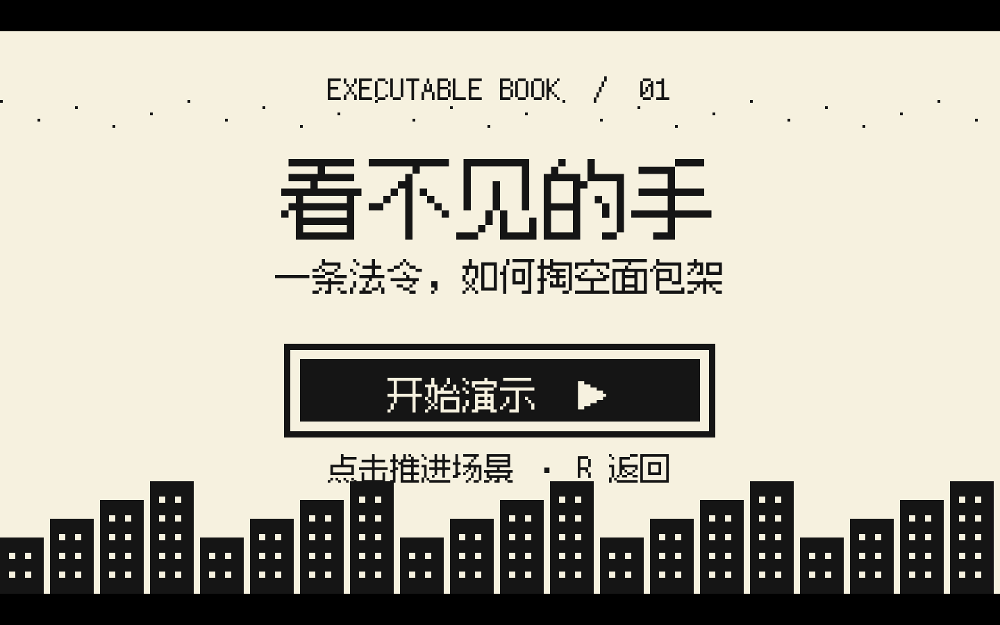

BOOK I · SOURCE GRAPH · PRIMARY TEXT
国富论The Wealth
of Nations
三段原文，先读出一条关系
每一段都是可激活的阅读节点。顺序点亮它们，右侧的 Experiment Slip 才会长出一组可以运行的关系。
ACTIVE NODE IDS
0 NODES · 0 EDGES
尚未激活阅读节点。
关系线将在第二个节点激活后出现。
PLATE I
THE UNSEEN CONSEQUENCE
RUNNING MODEL

价格上限实验 · 可执行模型
320 × 180 / 4×
AFTER THE WORLD / 01
世界并没有回答你。
世界并没有回答你。
它留下了一本账。
SOURCE IDS / ACTIVE GRAPH
—
GENERATED FROM0 NODES · 0 EDGES
尚未生成关系。
尚未留下判断。
- 法定售价≤ 2.0
- 面包成本2.2
- 面包师决定停炉
- 镇民得到的低价，但没有面包
SMITH TEXT · ACTIVE SOURCE GRAPH
“It is not from the benevolence of the butcher, the brewer, or the baker that we expect our dinner, but from their regard to their own interest.”
我们期待晚餐，不是仰赖屠夫、酿酒师或面包师的仁慈，而是仰赖他们对自身利益的关切。
Smith 没有做过这个价格上限实验。它是从 active source graph 外推的临时模型扩展，只用来验证“书如何拥有一个可运行世界”。